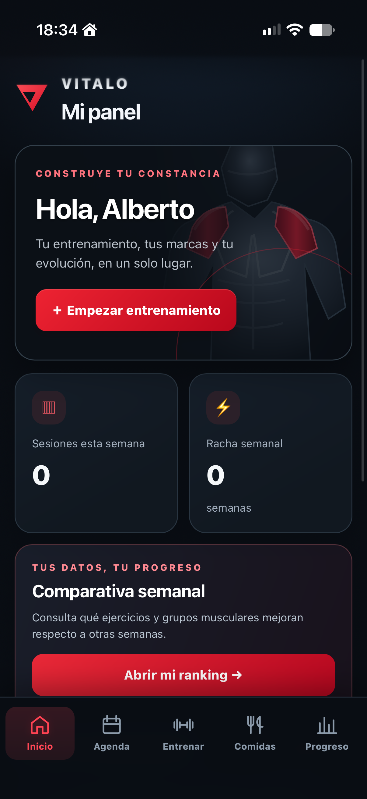

01 / PROYECTO PERSONAL

Vitalo
Aplicación web de entrenamiento creada mediante herramientas de inteligencia artificial. Un proyecto personal que combina deporte y tecnología.
INTELIGENCIA ARTIFICIAL · NETLIFYVer aplicación ↗
HOLA, SOY
Estudiante de 2.º de Desarrollo de Aplicaciones Web y técnico en Sistemas Microinformáticos y Redes. Me interesa el desarrollo de software, la tecnología y seguir aprendiendo con proyectos reales.
Bienvenido a alberto.dev v1.0
Sistema iniciado correctamente.
Escribe 'help' para comenzar.
Tab: autocompletar · ↑ ↓: historial
Tecnologías y herramientas que utilizo durante mi formación.
FORMACIÓN ACTUAL
Davante · En curso
01 / PROYECTO PERSONAL

Aplicación web de entrenamiento creada mediante herramientas de inteligencia artificial. Un proyecto personal que combina deporte y tecnología.
02 / TFG · DAW
Trabajo de Fin de Grado (TFG) de Desarrollo de Aplicaciones Web, actualmente en desarrollo.
● En desarrollo · Próximamente
03 / PROYECTO PERSONAL
Portfolio interactivo con diseño Bento Grid, terminal de comandos, filtros de proyectos y personalización del tema.
En constante evolución.
Davante · Grado Superior · En curso
Grado Medio
Prácticas FCT · Soporte informático, mantenimiento, sistemas y redes.
Idiomas: inglés B2 Cambridge (C1 en preparación) · Francés básico.
CONTACTO
Busco oportunidades de prácticas profesionales en el sector tecnológico.